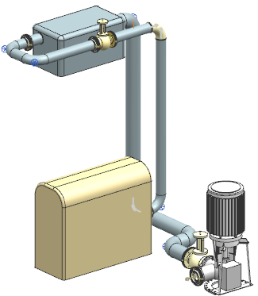
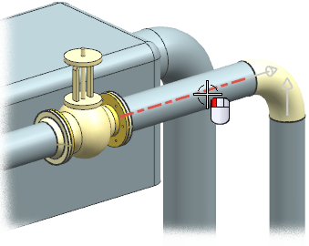
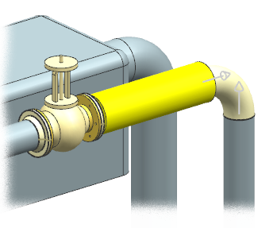
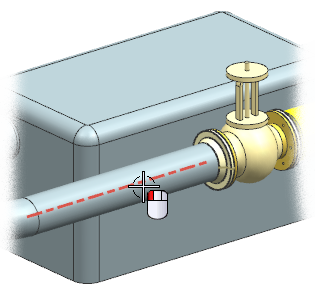
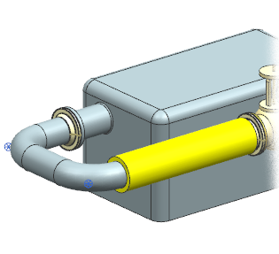

在管线路径中添加护套型材
您需要在子站 2旁的管线中添加保护性衬垫。
-
右击视图背景并选择定向视图→定制视图→TFR_2。

-
点击关闭。
-
在机械管线布置工具条上的型材下拉菜单中，选择护套型材
 。
。如果需要，在护套型材列表中选择指定的护套型材。
-
点击指定护套型材。
-
在文件夹视图列表框中，展开：
→管线部件库
→隔离层(Insulation) -
右击 Wrapped 并选择搜索子项。
-
选择下列搜索准则：
COLOR
=
黄色
材料
=
WrappedFoam
THICKNESS
=
19.05
WIDTH
=
76.2
-
点击确定。
-
在成员视图列表框中，选择 Wrap_0021，然后点击确定。
-
选择球阀旁的管线段。

-
在应用方法组的方法列表中，选择所有分段。
-
点击应用。

-
选择阀另一侧的管线段。

-
点击确定。

即使在选择时整条路径都高亮显示，但是所有分段仅在您选择的那条管线段处添加护套型材。要在其余的折弯段与管线段处添加护套型材，您需要手动选择它们。